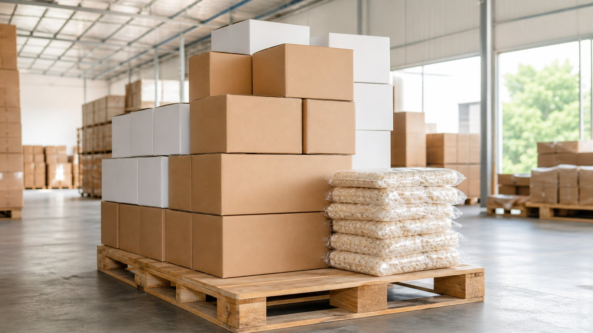

Products
제품소개
떡류·면류·소스·간편식까지 40여 개 품목. 급식·프랜차이즈·유통 채널의 규격에 맞춰 생산과 포장을 조정합니다.
Product Lineup
한 끼를 이루는
한 끼를 이루는
모든 구성
주력 품목은 로제 떡볶이떡과 생면, 소스입니다. 카드를 눌러 규격과 보관 기준을 확인하세요.

Signature · 2026
소스가 배도록,
샘플 신청
소스가 배도록,
표면을 설계했습니다
로제 떡볶이떡은 소스의 점도에 맞춰 표면을 살짝 거칠게 성형합니다. 크림이 떡에 붙어 떨어지지 않고, 매장에서는 해동 없이 3분 안에 조리됩니다.
- 국산 쌀 97% · 밀가루를 넣지 않은 배합
- 소스가 붙도록 표면을 살짝 거칠게 성형
- 해동 없이 바로 조리하는 업소용 규격
- 로제 소스 2kg와 세트 납품 가능
| 중량 | 1kg / 500g |
|---|---|
| 포장 | 진공 비닐 → 10개입 박스 |
| 보관·유통기한 | 냉장 0–4℃ / 14일 |
| 조리 | 해동 없이 중불 3분 |
Spec & Packing
규격과 포장
납품 채널이 다르면 필요한 규격도 다릅니다. 아래 기본 규격 외에는 상담으로 조정합니다.
| 제품 | 규격 | 포장 단위 | 보관 | 유통기한 |
|---|---|---|---|---|
| 로제 떡볶이떡 | 1kg / 500g | 10개입 박스 | 냉장 0–4℃ | 14일 |
| 가래떡 | 1kg | 10개입 박스 | 냉장 0–4℃ | 10일 |
| 찹쌀 인절미 | 400g | 12개입 박스 | 냉동 -18℃ | 6개월 |
| 생면 (중면) | 200g | 10봉입 박스 | 냉장 0–4℃ | 21일 |
| 우동 생면 | 200g | 10봉입 박스 | 냉장 0–4℃ | 21일 |
| 로제 소스 | 2kg | 6개입 박스 | 냉장 0–4℃ | 30일 |
| 떡볶이 소스 | 2kg | 6개입 박스 | 냉장 0–4℃ | 30일 |
| 떡볶이 밀키트 | 480g | 8개입 박스 | 냉동 -18℃ | 6개월 |
※ 위 규격은 예시이며, 채널별 요청에 따라 조정됩니다. 자세한 사항은 상담으로 안내드립니다.
B2B Bulk
업소용 대용량
업소용 대용량
라인업
급식·프랜차이즈는 물량과 조리 환경이 다릅니다. 벌크 규격과 소분 규격을 함께 운영합니다.
A
벌크 포장
떡류 10kg, 소스 10kg 단위. 주 2–3회 정기 납품에 맞춘 규격입니다.
B
소분 포장
1인분 200g, 2인분 480g 등 매장 조리 단위로 소분해 납품합니다.
C
PB·자체 라벨
거래처 브랜드로 라벨과 포장을 구성하는 PB 생산도 가능합니다.

10kg
업소용 기본 단위
주 2–3회 정기 납품